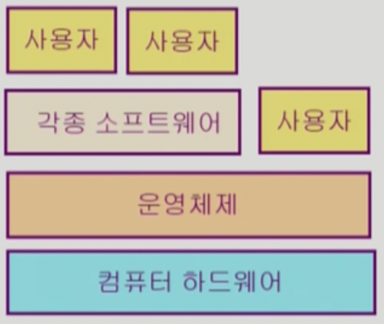
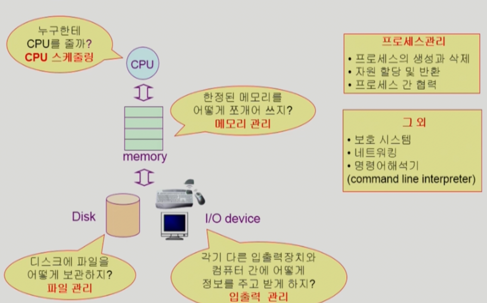

이화여자대학교 컴퓨터공학과 반효경 교수님의 "운영체제 (KOCW)" 강의를 필기한 내용입니다.
다소 잘못된 내용과 구어적 표현 이 포함되어 있을 수 있습니다.
운영체제 핵심

- 운영체제의 핵심은 컴퓨터의 하드웨어 바로 위에 설치되어 아래로는 하드웨어 자원을 관리하고 위로는 사용자 혹은 사용자 애플리케이션을 위한 편의 기능을 제공하는 것이다.
- 그래서 그 편의기능이 뭐냐
- 사용자로 하여금 내가 실행시킨 프로그램만 실행되고 있게 느끼도록 해주고
- 하드웨어를 제어하는 복잡한 작업을 대행하기 때문에 하드웨어에 대한 부분은 사용자가 고려하지 않아도 되게끔 해준다.
- 자원 분배를 할때는 분배의 형평성과 효율성 (주어진 자원 내에서의 최고의 성능) 이 Trade-off 관계에 있게 되는데 운영체제는 이 둘을 적절하게 타협해서 분배를 한댄다
- 뭐 예를들면 CPU 스케줄링할때 중요한 프로세스에다만 몰빵하면 중요하지 않은 프로세스는 CPU할당을 받지 못하게 되는 이러한 Trade-off
운영체제, 커널
- 커널은 운영체제의 핵심적인 부분으로 메모리에 항상 상주한다.
- 따라서 좁은 의미의 운영체제는 커널만을 칭하고 (협의의 운영체제) 넓은의미에서는 커널 뿐 아니라 주변의 다른 시스템 유틸리티까지 포함한다 (광의의 운영체제).
운영체제의 분류
동시 작업 가능 여부
- Single tasking: 한번에 하나의 작업만 처리
- 일례로 MS-DOS 의 경우에는 한번에 하나의 작업만 처리할 수 있어 명령을 끝내기 전에 다른 명령을 실행시킬 수 없다
- Multi tasking: 한번에 여러개의 작업 처리
사용자의 수
- Single user: 머신을 한 번에 한 명의 사용자만 사용할 수 있는 운영체제
- Multi user: 머신을 한번에 여러명의 사용자가 (원격) 접속하여 사용할 수 있는 운영체제
- 따라서 Multi user 를 위해서는 사용자 간의 격리를 위한 보안성이나 자원 할당 등의 부가적인 기능이 필요하다.
작업 처리 형태
- Batch processing: 이건 작업을 바로 처리하는 것이 아니라 일정량 모아서 한번에 처리하는 형태
- 따라서 작업을 요청하면 다른 작업이 일정량 모인 후에 실행되고 결과가 나올때 까지 기다려야 했다.
- 지금은 거의 안쓰고 옛날 Punch card 같은 처리 시스템에서 많이 쓰였음
- Time sharing: CPU time을 잘게 쪼개 여러 프로세스를 돌아가며 실행시키는 형태
- 뭐 지금의 운영체제가 다 그렇지 뭐
- 다만 이건 시간상의 제약이 있지는 않다 → 시간을 쪼개 작업을 처리하지만 해당 시간 내에 끝내는 것을 목표로 하지는 않음
- Real time: 작업의 deadline이 있어 해당 deadline 전까지 작업을 끝마치도록 하는 형태
- 시간이 중요한 시스템들 (뭐 원자력 제어 시스템이나 미사일 등) 을 위한 시스템
- 시간 내에 끝나지 않았을때 진짜 ㅈ되는 것을 위한 것이 Hard realtime system 이고
- 시간 내에 끝내야 하긴 하지만 ㅈ되지는 않는것 (뭐 동영상 스트리밍의 경우에는 1초에 24프레임을 불러와야 하니까) 을 위한 게 Soft realtime system 이라고 부르더라
Multi-어쩌고
- 프로세스를 병렬적으로 처리하는데에는 다음과같은 용어들이 있는데 어느정도는 구분할 수 있어야 한다
- Multitasking: 가장 범용적인 (범위가 큰) 용어 → 걍 프로세스가 여러개 작동될 수 있어 하나가 끝나기 전에 다른 하나가 실행될 수 있는 것
- Multiprogramming: 프로세스 여러개가 하나의 메모리에 적재될 수 있는 것
- 뭐 당연히 Multitasking 을 위해서는 Multiprogramming 이 되어야 하고 어느정도는 Multitasking과 의미가 겹치지만 얘는 약간 메모리 측면을 강조한 용어라고 할 수 있다.
- Time sharing: 프로세스 여러개가 CPU time을 돌아가며 할당받는 것
- 이것도 Multitasking 과 개념이 좀 겹치지만 얘는 CPU time을 강조한 용어라고 할 수 있다
- Multiprocess: 얘는 진짜 Multitasking과 차이가 없는거같은데
- Multiprocessor: 얘는 CPU가 여러개 달린 하드웨어적인 용어이다
- 일반적으로 Multitasking 이라 할때는 싱글프로세서를 의미한다.
운영체제의 구조

- CPU 스케줄링: CPU time 을 언제 누구에게 줄까?
- 선입선출? 가장 빨리 끝나는 놈부터?
- 메모리 관리: 메모리를 어떤 방식 프로세스들에게 할당해줄까?
- 메모리를 어떻게 쪼개서 프로세스에게 할당할까?
- 만일 메모리가 부족한 경우에 누군가를 디스크로 내보내야 한다면 누구를 내보낼까?
- 파일 관리: 파일들을 디스크에 어떻게 저장해서 어떻게 읽을까?
- 하나의 덩어리로 저장? 잘라서 저장?
- 읽을때는 들어온 요청의 순서대로? 아니면 디스크 헤드랑 가장 자까이 있는 놈부터?
- 입출력 관리: 속도도 느리고 제각각인 입출력장치랑 어떻게 상호작용할까?
- Interrupt 방식을 사용 → I/O 작업을 CPU가 계속 신경쓰는 게 아닌 작업이 끝났을 때 인터럽트를 걸어서 그때서야 CPU가 신경쓰도록 하는 방식